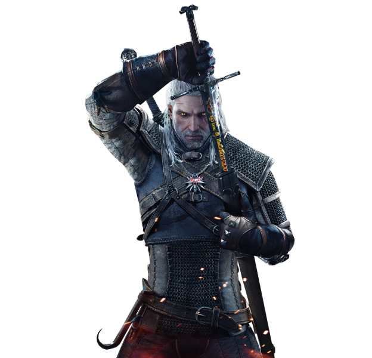
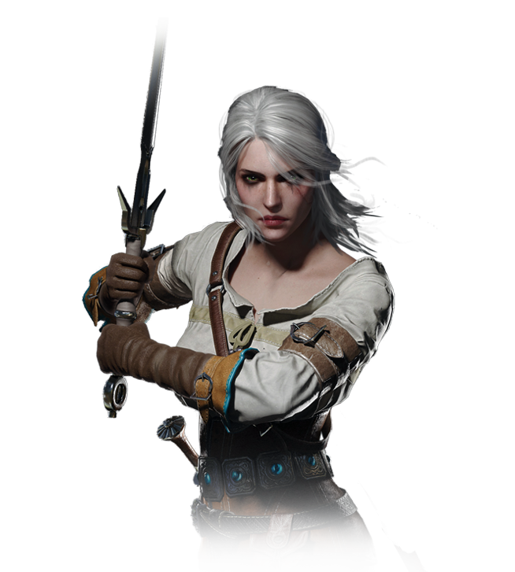
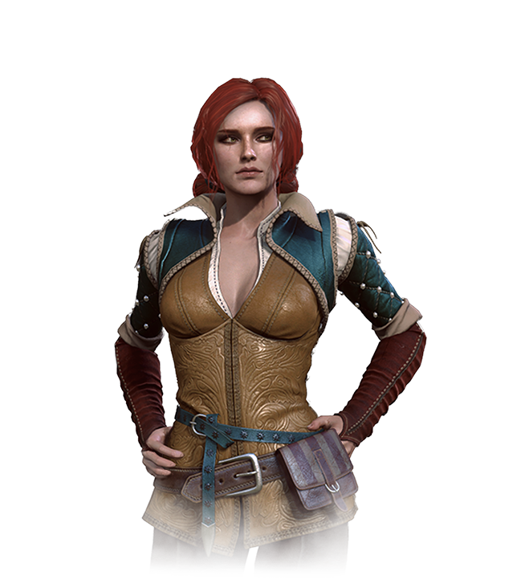
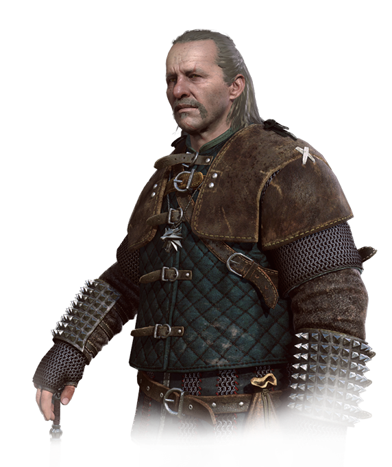
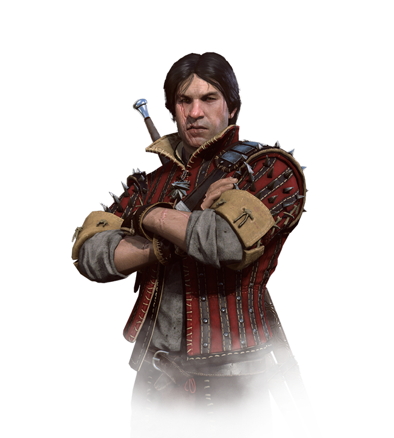
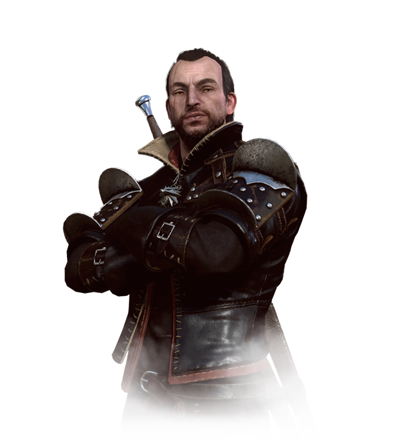

|  | Geralt z Rivii, przez driady i elfy nazywany Gwynbleidd (Biały Wilk), znany również jako Rzeźnik z Blaviken, ukochany Yennefer i przybrany ojciec Ciri, przybrany syn kapłanki Nenneke.
Krótko po narodzinach został on oddany przez matkę do wiedźmińskiej Szkoły Wilka w twierdzy Kaer Morhen.
Jego preceptorem, mistrzem i mentorem był Vesemir, nauczyciel szermierki i znawca potworów. To on nauczył Wilka wszystkiego, co sam umiał i stał się dla niego bardzo bliski, zastępując Geraltowi ojca.
Z czasów szkolenia miał towarzysza i przyjaciela Eskela oraz Lamberta.
Podczas swoich podróży zaprzyjaźnił się z bardem Jaskrem, choć nie przyszło mu to łatwo przez jego dziwny dla Geralta charakter.
Po ukończeniu wiedźmińskiego szkolenia rozpoczął swoją przygodę ze światem wraz ze swoim koniem, Płotką, by zostać płatnym zabójcą potworów. |
|  | Cirilla Fiona Elen Riannon, zdrobniale Ciri, przybrana córka Yennefer i Geralta oraz jego dziecko niespodzianka.
Była szczupłą kobietą o naturalnie popielatych włosach oraz szmaragdowych oczach. Była szybka i zwinna, znakomicie potrafiła walczyć swym mieczem zwanym Zireael.
Walczyła tak zręcznie, że wyglądało to, jakby tańczyła. Potrafiła stawić czoła więcej niż jednemu przeciwnikowi naraz, a w swoje kroki podczas pojedynków wplatała niezwykłe improwizacje.
Umiała znakomicie jeździć konno na swojej klaczy o imieniu Kelpie oraz znała podstawy magii i nauczyła się używać niektórych czarów.
Posiadała także wiedźmińską wiedzę na temat wszelkiego rodzaju potworów.
Jest jedyną wiedźminką, która nie przeszła próby traw, gdyż ujawnił się jej magiczny potencjał. |
 | Yennefer z Vengerbergu – czarodziejka, miłość życia Geralta z Rivii i przybrana matka Ciri.
Yennefer miała wybuchowy temperament oraz cięty język. Chociaż przez wielu uważana za nieprzewidywalną, zarozumiałą oraz wyrachowaną, dla bliskich jej osób potrafiła być ciepła i troskliwa .
Czarodziejka była bardzo przebiegła i zmyślna, wraz ze sprytem w parze szły niezwykłe uzdolnienia magiczne.
Dzięki wypowiedzianemu zaklęciu w "Ostatnim Życzeniu" jej miłością pozostał Geralt.
Jak większość czarodziejek była bezpłodna, nad czym bardzo ubolewała. Bezskutecznie poszukiwała sposobu, by przywrócić sobie pełnię kobiecości, wydając na to ogromne sumy pieniędzy. Niespełnioną matczyną miłość przelała na Ciri. |
|  | Triss Merigold młodziutka, wesoła, chichocząca z byle powodu, znającą tajemnice żywiołów, teleportacji i alchemii czarodziejka. Jak większość magiczek przeszła długoletnie szkolenie i naukę w Aretuzie, akademii magii położonej na wyspie Thanedd.
Podczas swoich wizyt w twierdzy miała nadzieję na romans z Geraltem. Czarodziejka sprzeciwiła się ostrym treningom Cirilli, która traktowała ją jak starszą siostrę.
Przyjaźniła się z Yennefer oraz innymi czarodziejami. Wiecznie droczyła się z Lambertem, który mówił na nią obraźliwie Merigold. |
 | Julian Alfred Pankratz wicehrabia de Lettenhove, znany jako Jaskier – poeta, trubadur, bard oraz najbliższy przyjaciel Geralta.
Ma skłonności do przesady i histerii, jest megalomanem przewrażliwionym na punkcie swojej osoby. Choć nie jest wojownikiem i przeważnie stara się unikać konfliktów oraz bitek, kilka razy udowodnił męstwo oraz wierność przyjaciołom.
W opowiadaniu Kraniec świata, kiedy on i Geralt zostali schwytani przez grupę wrogich elfów, Jaskier miał szansę ocalić życie; mimo to wolał zostać u boku Geralta i narazić się na śmierć.
Wyruszył też z wiedźminem w podróż, aby ratować Dziecko Przeznaczenia, Ciri. |
|  | Vesmir był prawdopodobnie najstarszym wiedźminem na kontynencie, mistrzem szermierki ze szkoły wilka i znawcą wszelkich potworów.Nauczyciel szermierki, przekazywał Ciri swoją wiedzę o potworach.
Dla wielu młodych wiedźminów był on mentorem i ojcem, miał więc w zwyczaju traktować wielu swoich dawnych podopiecznych z łagodnością. Vesemir złagodniał z wiekiem i stał się bardziej wyrozumiały.
Mimo tego wszyscy wiedźmini słuchali się jego rozkazów i poleceń, darząc go ogromnym szacunkiem. |
|  | Eskel był wiedźminem, przyjacielem Geralta z lat dziecięcych, podobnym mu wiekiem i wyglądem,z wyjątkiem koloru włosów.
Miał nieprzyjemną, metaliczną barwę głosu, a jego twarz szpeciła długa półokrągła blizna, zrobiona mu przez jego dziecko niespodziankę.
Był spokojny, unikał konfliktów. Mimo kompleksów z powodu swojego wyglądu lubił się uśmiechać.
Nie żałował, że został wiedźminem, pracował nad polepszeniem metod swojej pracy, lubił również nieskomplikowany styl życia oparty na braniu kolejnych zleceń, unikając polityki.
Szanował Vesemira jako mentora, a także przyjaźnił się z innymi Wilkami. Pozostali wiedźmini uważali go za najbardziej przyzwoitego, jednak można było go nakłonić do innego postępowania. Pociągały go kobiety z rogami, miał również słabość do Triss Merigold.
Posiadał właściwe wiedźminom zdolności, ponadto silnie emanował magią. Nie lubił alchemii, uważał szermierkę za lepszą. |
|  | Lambert był najmłodszym z wiedźminów przebywających w Kaer Morhen. Chłodny, opryskliwy, szczególnie wobec Triss Merigold.
Prowadził fizyczne szkolenia Ciri.Uczył ją akrobacji i piruetów w sposób wymagający i surowy.Wśród znajomych miał status gbura, wrednego, cynicznego i uszczypliwego. Nie był zadowolony z bycia wiedźminem, bardzo przeżył proces mutacji, co często podkreślał.
Był przeciwny tworzeniu nowych członków cechu. |